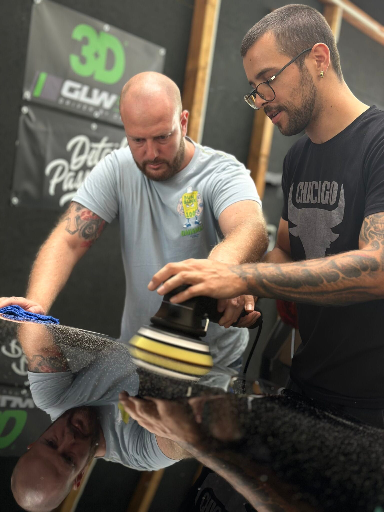
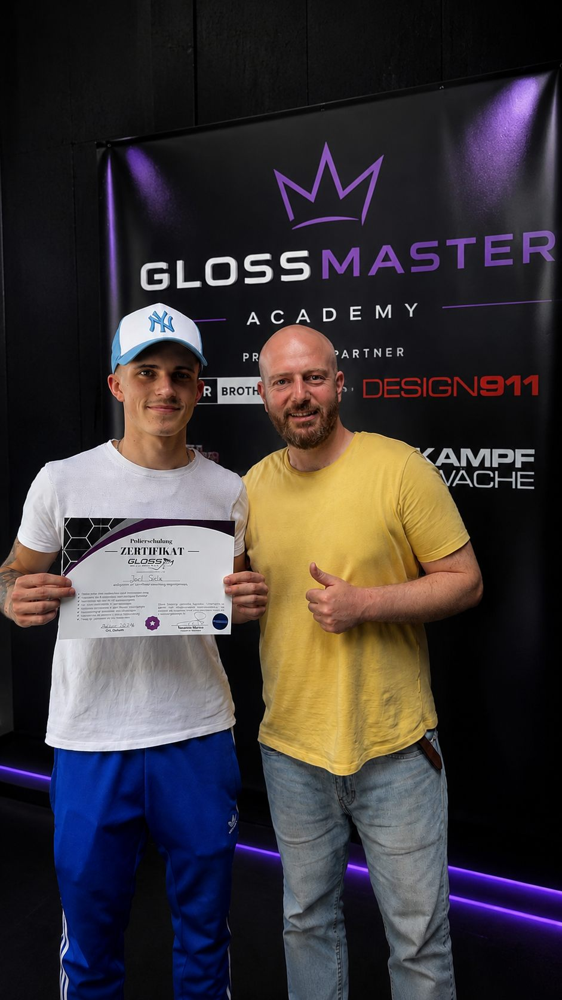

Außenwäsche Premium
Snow Foam, Zweieimertechnik, Felgen und Reifen, Trocknung mit Warmluft.
ab59 €
0 µm Oberfläche · Studio Aalen
Wir arbeiten im Mikrometer-Bereich: Kratzer auspolieren, ohne zu viel Lack zu nehmen, und eine Keramikschicht darüberlegen. Im eigenen Studio – und in 1:1-Kursen für alle, die es selbst lernen wollen.
≈ 120 µm Querschnitt
Kratzer sitzen im Klarlack. Wer poliert, nimmt davon ein paar Mikrometer weg – genau so viel wie nötig, nie mehr. Darum messen und prüfen wir, bevor die Maschine läuft.
Typische Werte bei Serienlack. Ein Blatt Papier ist rund 100 µm dick.
01 Aufbereitung
Feste Startpreise für Fahrzeuge bis Golf-Größe. Größere auf Anfrage – der Endpreis hängt vom Zustand ab.
Snow Foam, Zweieimertechnik, Felgen und Reifen, Trocknung mit Warmluft.
ab59 €Lackknete, 1–2-Step-Maschinenpolitur, Kontrolle mit Speziallicht. Unser Bestseller.
ab249 €Vorreinigung, 1–3-stufige Politur ohne Hologramme, Keramik-Auftrag.
ab799 €Saugen, Druckluft in alle Ecken, Kunststoffpflege, Finish mit Trockeneis.
ab99 €Motorraum, Radkästen und alles, wo Wasser nicht hinkommt.
ab100 €Mehrstufig, nach Aufwand. Wir sehen uns den Lack an und sagen dir vorher, was machbar ist.
Angebot
− 2 µm Lackkorrektur
Kratzer und Hologramme sieht man erst im Licht. Wir polieren sie aus und prüfen jeden Durchgang unter Speziallicht.
02 GlossMaster Academy
Alle Kurse sind Einzelschulungen im Studio Aalen, am echten Lack, mit Teilnahmezertifikat. Den Termin stimmen wir mit dir ab.
„Du arbeitest selbst – ich greife ein, bevor du dir den Lack kaputt machst.“Marcello Marino, Trainer
| KomplettaufbereitungInnen und außen, der ganze Ablauf an einem Fahrzeug. | 2 Tage | 890 € |
| PolierschulungLackanalyse, Anschliff, Pad- und Politurwahl. | 4–6 Std. | 379 € |
| KeramikversiegelungVorbereitung, Auftrag und Leveln, Pflege. | 4–6 Std. | 419 € |
| LederreparaturSitze reparieren, Farbe angleichen. | 4–6 Std. | 429 € |
| InnenaufbereitungLeder, Stoff, Flecken, Kunststoff. | 4–6 Std. | 459 € |
| ScheinwerferAbkleben, schleifen, polieren. | 1:1 | 459 € |
| Business CoachingPositionierung, Social Media, Preise, Kundengewinnung. | Coaching | 999 € |
Lackdefekte unter professioneller Lichttechnik erkennen.
Richtig waschen, kneten und empfindliche Teile abkleben.
Exzenter und Rotation, Pads und Druck sicher führen.
Defekte korrigieren, Hochglanz ohne Fehlerbilder.



03 GM Qualitätsbetrieb
Nicht jeder Betrieb wird aufgenommen. Wer das Siegel trägt, arbeitet nach dem GlossMaster-Standard.

04 Kundenstimmen
„Marcello ist ein sehr freundlicher und transparenter Mensch, der sein Handwerk zu 100% versteht.“Viajacko · 2-Tages-Schulung
„Ich hab mein Auto nicht mehr wiedererkannt.“Darya Kovaleva · Aufbereitung
„Hab vor einem Jahr die Keramikversieglung machen lassen, heute die erste Nachbehandlung.“marie mue · Keramikversiegelung
05 Kontakt
Schreib uns Marke, Modell und was gemacht werden soll – am schnellsten per WhatsApp. Für Kurse einfach den Wunschkurs dazuschreiben.
Die Pads, mit denen wir selbst polieren.
Zum ShopPartner: Design911 · Werk96 · Dampfdrache